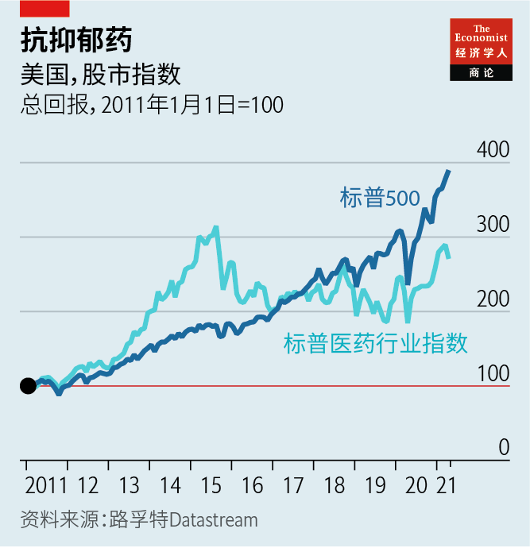
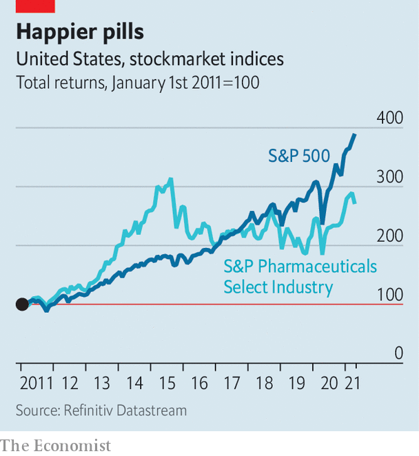

2021-04-29T11:10:26+00:00
新药方
辉瑞老板认为疫情让大药厂变得更好
制药业正变得更灵活、更具创新力

“很多时候，不可能也会成为可能。”美国制药巨头辉瑞的老板艾伯乐（Albert Bourla）在谈到（与德国拜恩泰科[BioNTech]合作）快速研制新冠疫苗时沉思道。这一感受也可以用来描述制药业的命运转折。
在新冠疫情之前，大型制药公司可是遇到了大麻烦。它们更多投资于营销而不是研发，追求推出“派生药”而不是钻研创新疗法，还被指控哄抬药价，因而广受批评。2019年，民调机构盖洛普（Gallup）让美国人按喜爱程度给20多个大型行业排名，结果制药业垫底。同年在国会，药厂老板像大烟草公司一样受到两党责难，国会威胁要实施价格管制。市场担心研发收益和投资回报衰减，令制药公司的股价承压（见图表）。
起初，这场疫情看似是又一记沉重打击。前体化学品等关键物资的供应链中断。医院忙于应对新冠肺炎，推迟了利润丰厚的择期治疗。新药的临床试验也因疫情延后，而它们是未来利润所在。然后，转机出现了。随着去年各经济体逐渐重新开放，药品销售开始复苏。包括辉瑞在内的几家公司研制出了有效的新冠疫苗。辉瑞估计2021年它的疫苗销售额将超过150亿美元。它还估计，这将使它调整后的税前利润增加40多亿美元。投资者开始看好这个行业。
乐观的理由不仅仅在于新冠疫苗。另一位药厂老板最近在一个私人场合宣称这次疫情是“制药业的一个重大转折点”。一个更灵活、更有创新力的产业正从逆境中崛起，这在一年前似乎还不可想象。
咨询公司贝恩的蒂姆·范比森（Tim van Biesen）表示，在与新冠病毒争分夺秒的赛跑中，制药公司“打破了一切规则”。这让CEO们开始自问，公司的日常运营为什么不能更灵活一些。法国巨头赛诺菲（Sanofi）的研发主管约翰·里德（John Reed）表示，疫情将公司的决策推到了更低的层级，推动公司以更多的紧迫感行动。“我们只花三四天就拿出了试验概念，这在过去要三四个月。”他惊叹道。
奥纬咨询（Oliver Wyman）的山姆·格里克（Sam Glick）指出，疫情期间，临床试验的新病人入组人数骤减了近80%，但随着公司采用诸如远程监护、电子病人筛查和远程会诊等数字工具，人数已经回升。美国另一家大药厂礼来（Eli Lilly）的掌门人戴文睿（David Ricks）表示，虚拟临床试验可能会被证明更快更好，还能覆盖以往较难接触到的人群，例如农村居民。美国领先的连锁医院妙佑医疗国际（Mayo Clinic）的安德鲁·巴德利（Andrew Badley）认为，药厂研究人员有史以来第一次得以充分利用非结构化数据，如临床医师记录。得益于数字化手段，辉瑞的所有试验在2020年均保持正常推进。“在疫情之前，我们是不敢测试这些东西的，但它们出色地通过了考验。”艾伯乐说。这些做法将会保留下来。
疫情之下，医药销售代表没有机会为医生组织“进修”旅游，于是也走上了数字化路线。礼来的老板估计，2020年公司的虚拟联系人数量比一年前增长逾十倍。他估计这些人脉关系也将维系下去，因为公司可以用这种方式“联系上那些不愿见我方销售代表的医生”。艾伯乐同意这种说法，表示“医生喜欢这种方式”。麦肯锡的智库麦肯锡全球研究院计算认为，转向数字化销售可以将整个行业的生产率提高四分之一，因为这意味着员工人数缩减，营销与销售部门预算也可以更精益，而这部分占了药厂运营成本的近40%。
大药厂僵化的创新模式也被撼动。艾伯乐表示，过去制药公司能追逐的“靶点少得多”，自然而然就会在少数几款重磅产品上押下重注。而现在，他注意到它们必须在数百种可能性中做选择。投资银行摩根士丹利的戴维·瑞辛格（David Risinger）预测，“新平台和候选药物的激增将导致更多协作”，就像辉瑞和拜恩泰科那种。制药公司极为看重知识产权保护，但包括贝恩的范比森在内的许多行业观察人士一直都在呼吁制药公司拥抱更多开源创新。近期一系列的合作表明它们可能终于听进去了。
大药厂的前景乐观，最意想不到的原因可能是它们焕然一新的形象。许多美国人从未听说过辉瑞，而听说过的人可能也只认为它是个敛财机器。现在，普罗大众将这家公司奉为拯救生命的创新者。咨询公司毕马威的方大伟（David Frey）认为：“‘大科学’是好公司，而大药厂现在上了台面，牢牢地占据了一席之地，有机会再次变‘好’。”哈里斯民调（Harris Poll）最近一次调查发现，公众对该行业的认可度从去年的30%左右飙升至60%以上。
制药公司能把握住这个机会吗？艾伯乐表示，辉瑞并不支持美国药价的现状。按全球标准来看它们过高了，而且为全球制药业贡献了最大一块利润。不止于此，他还坚称辉瑞“愿意做出财务贡献”，推进“让人人用得起药”的改革——只要保险公司和政府也参与进来。如果他能说服其他药厂老板支持这一新的社会契约，这可能比研发出不可思议的新冠疫苗更加功德无量。
本刊所有疫情和疫苗相关文章都可以在官网的新冠专题页面查看。您还可以收听我们关于接种与感染的赛跑的新播客《接种》(The Jab)，并通过我们的追踪示意图了解疫苗的全球接种进度、各国的额外死亡人数以及病毒在欧美的传播情况。
2021-04-29T11:10:26+00:00
Reformulated
Pfizer’s boss thinks covid-19 is reshaping Big Pharma for the better
The industry is becoming nimbler and more innovative

“THE IMPOSSIBLE can many times become possible,” reflects Albert Bourla, boss of Pfizer. He is talking about the giant American drugmaker’s speedy development (with BioNTech of Germany) of a vaccine against covid-19. The sentiment also applies to the turnaround in the fortunes of the pharmaceutical industry.
Before the pandemic Big Pharma was in big trouble. It was widely criticised for investing more in marketing than in research, for pursuing “me too” drugs over novel therapies, and for alleged price-gouging. When Gallup, a pollster, asked Americans in 2019 to rank two dozen big industries by favourability, the drugs business came in last. That year its bosses were subjected to a Big Tobacco-style bipartisan hazing in Congress, which threatened price controls. Concerns over diminishing research gains, and returns, weighed on drugmakers’ share prices (see chart).
At first, the pandemic looked like another blow. Supply chains for essentials such as precursor chemicals were disrupted. As hospitals focused on covid-19, lucrative elective treatments were postponed. So were clinical trials of new medicines, on which future profits depend. Then something happened. As economies gradually reopened last year, drug sales began to recover. Several firms have, like Pfizer, come up with effective vaccines against covid-19. Pfizer reckons the sales of its jab will surpass $15bn in 2021. The firm reckons it could add more than $4bn to its adjusted profits before tax. Investors are becoming more bullish on the sector.
The reasons for optimism extend beyond the covid-19 jab. Another pharma boss recently declared to a private audience that the pandemic was “a significant inflection point for the industry”. Unlikely as it may have seemed a year ago, a nimbler, more innovative business is emerging from adversity.
The breathless race against covid-19 led pharma to “break all of the rules”, says Tim van Biesen of Bain, a consultancy. This prompted CEOs to ask why they weren’t more agile in their day-to-day operations. John Reed, head of research and development (R&D) at Sanofi, a French giant, says the pandemic has pushed decision-making lower down the corporate ladder, helping his firm move with a greater sense of urgency. “We got trial concepts together in three or four days that took three or four months in the past, ” he marvels.
Sam Glick of Oliver Wyman, a consultancy, notes that new patient enrolment for clinical trials, which plunged by nearly 80% amid the pandemic, has rebounded as firms have embraced digital tools such as remote monitoring, electronic patient-screening and tele-consultations. David Ricks, who runs Eli Lilly, another big American drugmaker, has said that virtual trials could prove faster and better, as well as bringing in harder-to-reach populations, for instance in rural areas. Andrew Badley of the Mayo Clinic, a leading American hospital chain, argues that drugmakers’ boffins are for the first time making good use of unstructured data such as clinicians’ notes. Digitisation allowed Pfizer to keep all of its trials on track in 2020. “We wouldn’t have dared to test these things before the pandemic but they passed with flying colours,” Mr Bourla says. They are here to stay.
Pharmaceutical sales reps, whom the pandemic has deprived of the opportunity to put on “educational” junkets for doctors, are also going digital. Eli Lilly’s boss has estimated that his firm’s virtual contacts rose more than ten-fold in 2020 compared with a year earlier. He reckons they, too, will be maintained, as they may allow the firm to “reach those physicians who wouldn’t see our sales representatives”. Mr Bourla agrees, reporting that “doctors like it”. McKinsey Global Institute (MGI), the consultancy’s in-house think-tank, calculates that the shift to digital sales could raise industry-wide productivity by a quarter, since it means a smaller staff and leaner budgets in marketing and sales departments, which account for nearly 40% of drugmakers’ operating costs.
Big Pharma’s sclerotic innovation model is also being shaken up. In the past there were “way fewer targets” for drug firms to pursue, says Mr Bourla, so it made sense to bet big on a few blockbusters. Now, he observes, firms must choose among hundreds of possibilities. This “explosion of new platforms and drug candidates will result in much more collaboration” of the Pfizer-BioNTech sort, predicts David Risinger of Morgan Stanley, an investment bank. Drugmakers are obsessed with guarding intellectual property but many industry watchers, including Mr van Biesen of Bain, have long argued that they should embrace more open-source innovation. A flurry of recent collaborations suggests that they may at last be listening.
Perhaps the most surprising reason for optimism about Big Pharma’s prospects arises from its burnished image. Many Americans had never heard of Pfizer and those that did probably thought of it as money-grubbing. Now the company is hailed by ordinary people as a life-saving innovator. “Big Science is good, and Big Pharma now has a seat firmly at the table and has a chance to be ‘good’ again,” thinks David Frey of KPMG, a consultancy. A recent Harris Poll found that public approval of the industry has shot up from around 30% last year to over 60%.
Will drugmakers seize the moment? Mr Bourla says that Pfizer does not support the status quo on drug prices in America. These are high by global standards, and contribute the lion’s share of profits for the global drugs business. He goes further, insisting that Pfizer is “willing to contribute financially” to reforms that give “access for all”, so long as insurers and government chip in too. If he can persuade his fellow pharma bosses to support this new social contract, it could be an even bigger feat than those incredible covid-19 shots. ■
All our stories relating to the pandemic and the vaccines can be found on our coronavirus hub. You can also listen to The Jab, our new podcast on the race between injections and infections, and find trackers showing the global roll-out of vaccines, excess deaths by country and the virus’s spread across Europe and America.
2021-04-29T11:10:26+00:00
新藥方
輝瑞老闆認為疫情讓大藥廠變得更好
製藥業正變得更靈活、更具創新力
“很多時候，不可能也會成為可能。”美國製藥巨頭輝瑞的老闆艾伯樂（Albert Bourla）在談到（與德國拜恩泰科[BioNTech]合作）快速研製新冠疫苗時沉思道。這一感受也可以用來描述製藥業的命運轉折。
在新冠疫情之前，大型製藥公司可是遇到了大麻煩。它們更多投資於營銷而不是研發，追求推出“派生葯”而不是鑽研創新療法，還被指控哄抬葯價，因而廣受批評。2019年，民調機構蓋洛普（Gallup）讓美國人按喜愛程度給20多個大型行業排名，結果製藥業墊底。同年在國會，藥廠老闆像大煙草公司一樣受到兩黨責難，國會威脅要實施價格管制。市場擔心研發收益和投資回報衰減，令製藥公司的股價承壓（見圖表）。
起初，這場疫情看似是又一記沉重打擊。前體化學品等關鍵物資的供應鏈中斷。醫院忙於應對新冠肺炎，推遲了利潤豐厚的擇期治療。新葯的臨床試驗也因疫情延後，而它們是未來利潤所在。然後，轉機出現了。隨着去年各經濟體逐漸重新開放，藥品銷售開始復蘇。包括輝瑞在內的幾家公司研製出了有效的新冠疫苗。輝瑞估計2021年它的疫苗銷售額將超過150億美元。它還估計，這將使它調整後的稅前利潤增加40多億美元。投資者開始看好這個行業。
樂觀的理由不僅僅在於新冠疫苗。另一位藥廠老闆最近在一個私人場合宣稱這次疫情是“製藥業的一個重大轉折點”。一個更靈活、更有創新力的產業正從逆境中崛起，這在一年前似乎還不可想象。
諮詢公司貝恩的蒂姆·范比森（Tim van Biesen）表示，在與新冠病毒爭分奪秒的賽跑中，製藥公司“打破了一切規則”。這讓CEO們開始自問，公司的日常運營為什麼不能更靈活一些。法國巨頭賽諾菲（Sanofi）的研發主管約翰·里德（John Reed）表示，疫情將公司的決策推到了更低的層級，推動公司以更多的緊迫感行動。“我們只花三四天就拿出了試驗概念，這在過去要三四個月。”他驚嘆道。
奧緯諮詢（Oliver Wyman）的山姆·格里克（Sam Glick）指出，疫情期間，臨床試驗的新病人入組人數驟減了近80%，但隨着公司採用諸如遠程監護、電子病人篩查和遠程會診等數字工具，人數已經回升。美國另一家大藥廠禮來（Eli Lilly）的掌門人戴文睿（David Ricks）表示，虛擬臨床試驗可能會被證明更快更好，還能覆蓋以往較難接觸到的人群，例如農村居民。美國領先的連鎖醫院妙佑醫療國際（Mayo Clinic）的安德魯·巴德利（Andrew Badley）認為，藥廠研究人員有史以來第一次得以充分利用非結構化數據，如臨床醫師記錄。得益於數字化手段，輝瑞的所有試驗在2020年均保持正常推進。“在疫情之前，我們是不敢測試這些東西的，但它們出色地通過了考驗。”艾伯樂說。這些做法將會保留下來。
疫情之下，醫藥銷售代表沒有機會為醫生組織“進修”旅遊，於是也走上了數字化路線。禮來的老闆估計，2020年公司的虛擬聯繫人數量比一年前增長逾十倍。他估計這些人脈關係也將維繫下去，因為公司可以用這種方式“聯繫上那些不願見我方銷售代表的醫生”。艾伯樂同意這種說法，表示“醫生喜歡這種方式”。麥肯錫的智庫麥肯錫全球研究院計算認為，轉向數字化銷售可以將整個行業的生產率提高四分之一，因為這意味着員工人數縮減，營銷與銷售部門預算也可以更精益，而這部分佔了藥廠運營成本的近40%。
大藥廠僵化的創新模式也被撼動。艾伯樂表示，過去製藥公司能追逐的“靶點少得多”，自然而然就會在少數幾款重磅產品上押下重注。而現在，他注意到它們必須在數百種可能性中做選擇。投資銀行摩根士丹利的戴維·瑞辛格（David Risinger）預測，“新平台和候選藥物的激增將導致更多協作”，就像輝瑞和拜恩泰科那種。製藥公司極為看重知識產權保護，但包括貝恩的范比森在內的許多行業觀察人士一直都在呼籲製藥公司擁抱更多開源創新。近期一系列的合作表明它們可能終於聽進去了。
大藥廠的前景樂觀，最意想不到的原因可能是它們煥然一新的形象。許多美國人從未聽說過輝瑞，而聽說過的人可能也只認為它是個斂財機器。現在，普羅大眾將這家公司奉為拯救生命的創新者。諮詢公司畢馬威的方大偉（David Frey）認為：“‘大科學’是好公司，而大藥廠現在上了檯面，牢牢地佔據了一席之地，有機會再次變‘好’。”哈里斯民調（Harris Poll）最近一次調查發現，公眾對該行業的認可度從去年的30%左右飆升至60%以上。
製藥公司能把握住這個機會嗎？艾伯樂表示，輝瑞並不支持美國葯價的現狀。按全球標準來看它們過高了，而且為全球製藥業貢獻了最大一塊利潤。不止於此，他還堅稱輝瑞“願意做出財務貢獻”，推進“讓人人用得起葯”的改革——只要保險公司和政府也參與進來。如果他能說服其他藥廠老闆支持這一新的社會契約，這可能比研發出不可思議的新冠疫苗更加功德無量。
本刊所有疫情和疫苗相關文章都可以在官網的新冠專題頁面查看。您還可以收聽我們關於接種與感染的賽跑的新播客《接種》(The Jab)，並通過我們的追蹤示意圖了解疫苗的全球接種進度、各國的額外死亡人數以及病毒在歐美的傳播情況。